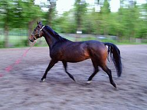
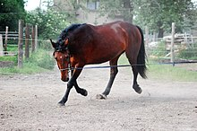
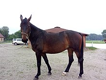

Konie
Koń domowy (Equus caballus) – gatunek ssaka nieparzystokopytnego z rodziny koniowatych.
Udomowienie
Koń po raz pierwszy został udomowiony prawdopodobnie na terenie północnego Kazachstanu w okresie kultury Botai, tj. około 3,5 tys. lat p.n.e.[2][3], natomiast ludność europejska dokonała tego ok. 1,5 tys. lat p.n.e. Obecnie przedstawiciele 18 z 21 współczesnych ras hodowlanych pochodzą od dwóch linii – arabskiej i turkmeńskiej.
Przodkowie i genetyka konia
Przodkami koni orientalnych, od których pochodzą konie gorącokrwiste, były prawdopodobnie koń Przewalskiego i tarpan; konie zimnokrwiste pochodzą natomiast od konia leśnego z Północnej Europy. Koń Przewalskiego jest obecnie jedynym przedstawicielem gatunku koni dzikich. Rasa konik polski wykazuje bardzo duże podobieństwo do tarpana, lecz nie jest genetycznie tą samą rasą (chociaż poza Polską koniki polskie bywają określane mianem tarpan)[5]. W styczniu 2007 zespół naukowców z Massachusetts Institute of Technology i Uniwersytetu Harvarda poinformował, że stworzył wstępną mapę genomu konia.
Koń małopolski
konie półkrwi angloarabskiej i arabskiej hodowane w Małopolsce, nieco mniejsze i lżejsze od koni wielkopolskich, urodziwe, o suchej budowie, doskonałym ruchu, dobrze wykorzystujące paszę, wytrwałe i dzielne w pracy. Rasa ta jest oznaczana przez hodowców za pomocą symbolu "m.xo". Jest to ogólne określenie dla koni półkrwi angloarabskiej hodowanych w południowej i południowo-wschodniej części Polski.
Historia rasy
 Konie małopolskie wywodzą się swymi liniami żeńskimi od miejscowych koni chłopskich o dużym udziale krwi koników polskich[1], dlatego też ze wszystkich odmian koni gorącokrwistych hodowanych w Polsce, konie te mają najsilniej wyrażone cechy przekazywane im przez konika polskiego: płodność i plenność, długowieczność, dobre wykorzystanie paszy i niewybredność, odporność na choroby i trudne warunki bytu oraz wytrzymałość w pracy. Rodzima populacja klaczy została w XVIII wieku uszlachetniona końmi orientalnymi: perskimi, turkmeńskimi, tureckimi i arabskimi. W XIX wieku wprowadzono do hodowli konie ze szczepów austro-węgierskich, takich jak Shagya, Amurath, Gidran, Gazla, Dahoman, Furioso i Przedświt oraz konie angielskie, arabskie i angloarabskie czystej krwi (długa tradycja hodowlana tych ostatnich w Polsce)[1]. W latach 60. XX wieku w pierwszej Księdze Stadnej rasy małopolskiej znalazły się również konie kabardyńskie sprowadzone z Kaukazu do stadniny w Stubnie. Urodzony w 1937 roku w Wojcieszkowie siwy ogier Ramzes miał znaczny wpływ na hodowlę koni holsztyńskich i westfalskich[1].
Pokrój
Są to konie w typie wierzchowym, eleganckie, wytrzymałe, o średnich gabarytach i suchej budowie, najczęściej w typie angloarabskim. Głowa niewielka, zbliżona wyglądem do głowy konia arabskiego. Szyja długa, kark lekki. Kłąb zaznaczony wyraźnie, łopatki czasem strome. Grzbiet bywa nieco słaby, kłoda niezbyt szeroka i głęboka. Zad lekko ścięty, dobrze umięśniony. Kończyny długie i suche, czasami trochę zbyt lekkie, kopyta dobre, bez szczotek pęcinowych. Występują wszystkie maści. Wysokość w kłębie wynosi 158-165 cm[1]. Zazwyczaj koń małopolski jest mniejszy o ok. 5 cm od konia wielkopolskiego i o 100 kg od niego lżejszy.
Koń śląski
(niem. Schlesisches Warmblut) – rasa koni powstała na bazie koni z terenów Dolnego i Górnego Śląska. Rasa ta odnosi duże sukcesy jako konie zaprzęgowe w dyscyplinie powożenia[1]. Współcześnie rasa ta występuje w dwóch typach: starym i nowym.
Historia rasy
Planowa hodowla tych koni rozpoczęła się w XIX wieku w stadach ogierów w Lubiążu i Koźlu. Miejscowe klacze, mające często orientalnych przodków, kojarzono z ogierami oldenburskimi i wschodniofryzyjskimi, będącymi najmasywniejszymi niemieckimi końmi gorącokrwistymi. W latach 1880-1939 ukształtowano hodowlę konia w typie konia oldenburskiego, choć szlachetniejszego i suchszego[1]. Po II wojnie światowej rasę utrzymano poprzez dolew krwi koni oldenburskich. Dzięki zamiłowaniu hodowców oraz możliwości użytkowania roboczego w rolnictwie, rasa przetrwała na Śląsku, a także zyskała popularność w Polsce południowo-wschodniej. Ważnymi ośrodkami hodowlanymi stały się Stada Ogierów w Koźlu oraz Stado Ogierów w Książu.
Pokrój
Konie o łagodnym usposobieniu, wydajnych i eleganckich chodach, chętnie pracujące z człowiekiem.
 